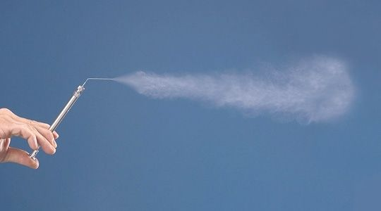
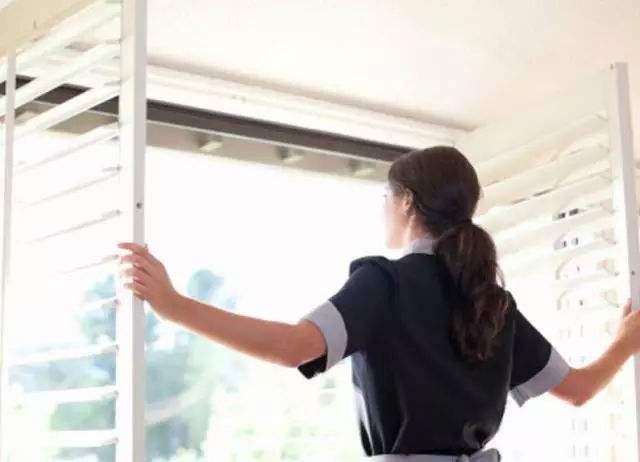

气溶胶传播
什么是气溶胶传播？我们该如何预防？
什么是气溶胶？
可能大家都有过这种经历：走在楼道里甚至路上，明明周围几米之内都没有人，但仍然可以闻到烟味。我们闻到的其实是烟草燃烧后形成的颗粒。
越小的颗粒，空气的粘性作用就越明显。微米级的颗粒在空气中像是芝麻撒在蜂蜜里，沉降速度很慢。1微米的颗粒，在静止空气中沉降时间就达到1小时以上。而环境中又总有风吹草动，于是这些颗粒几乎永远不会沉降，始终停留在空气中。这也是为什么抽烟的人早已经消失不见，烟味还久久不散的原因。
这种在气体中稳定分散悬浮的液态或固体小颗粒就叫做气溶胶（aerosol）。之所以翻译为“胶”，大约就是取颗粒与媒介之间黏黏糊糊、难分难舍之意。
飞沫核尺寸就在亚微米到微米的范围，与烟草燃烧后的颗粒尺度类似。因此，飞沫核在空气中可以悬浮很久，并且在空气湍流的推波助澜下飘向远方。飞沫核中若有冠状病毒，再被人吸入体内，就有可能导致感染。

哪些活动可能产生气溶胶
2月1日，深圳第三人民医院在某些新冠肺炎患者的粪便中检测出新冠病毒核酸（RNA）阳性。虽然RNA不等同于有活性的病毒，但也使得粪便中存在病毒的情况成为可能，这让“粪口传播”引起关注。
“粪口传播”最可能通过气溶胶和呼吸传播。这是因为与呼吸活动类似，排泄活动也可以产生气溶胶。排泄活动也是牵扯到软物质和复杂流体（液体和气体）的力学过程，这些过程甚至可能比较剧烈，因此产生气溶胶是也很自然的。
气溶胶的传播距离之远可能超过我们的想象。一个相关的研究证据是澳大利亚昆士兰地区涉及437个马场的马流感传播事件。这些马场间距平均距离约为1公里，最远达13公里。马流感开始时，隔离政策的宣传和执行都很到位，没有马与马的近距离直接接触，但仍发现很多马被感染。原来，感染区域与风向也密切相关：马流感在气溶胶模式在固定风向的作用下可能具备公里级的超长距离的传播能力。
气溶胶是如何传播的？
与喷嚏、咳嗽、说话相比，病毒携带者的正常呼吸是最温和的活动，但也是最防不胜防的。在呼吸的时候，肺部在做大量、长时间的雾化，并且雾化的颗粒极小。病毒携带者哪怕不咳嗽、不打喷嚏，也可能悄无声息地不间断地释放含病毒的气溶胶。
科学家发展了动物模型来研究病毒在哺乳动物间的传播途径，值得注意的是甲流的几内亚猪（guinea pig）模型。感染了甲流的几内亚猪会有发热症状，但是不咳嗽，这就排除了大飞沫传染的可能性。但研究发现，相距三英尺的两个笼子中的几内亚猪仍然可以被感染，这是呼吸导致的气溶胶传染模式的有力证据。
有学者认为，在气溶胶状态下，一小时后病毒都可能保持感染能力。他们认为呼吸道上皮细胞可能脱落并成为病毒离开人体的载体，为病毒保持活性提供条件。而这一小时内气溶胶凭借风势可以上青云，也可以传播到几公里外的地方。
当然，我们也不必太过担心。即使病毒能通过气溶胶进行长距离传播，随着距离的增长，病毒浓度也会急剧下降，会达到远远低于感染剂量的水平。
气溶胶传播对我们的威胁是不是很大？
要重视，但不必恐慌。
气溶胶虽然容易形成，但要感染人并不容易，而且我们还有措施预防。由于一般气溶胶颗粒比较大，通常大于10微米、50微米以上的最多，一般的医用口罩就可以阻挡。
特别小的气溶胶微粒（半径小于0.1微米），重量轻，主要分布在高空（来自土壤的靠近地面），它们会随风飘走，被人呼吸到的可能性不大。另外，气溶胶质点比表面能很大，又有电荷，病毒很容易被破坏，存活度不高。
对于非医务人员的普通人，在实际生活中，只有达到极高数量级的阈值，部分病毒才能由黏膜进入人体。
而通过气溶胶形式悬停在衣物、皮肤的病毒，只有极微小的比例能通过手部触摸进入眼口鼻。这样的病毒量，引发疾病的可能性不高。
气溶胶存在于空气里，还能开窗通风吗？
对于一般小区的居民，能开窗通风。
要减少悬浮的气溶胶的影响，适当的通风措施是必要的。例如在建设医疗设施时，往往采用上进下出方式，替换房间内的污染空气。
但需要注意，气溶胶是有可能随空气流动的，由于气流方向不当，可导致污染气溶胶流向干净的区域。
如果有居家隔离者，必须单间隔离，或处在全屋出风的位置，公共区域或其它房间自然通风时必须关闭患者所在屋子门窗。
同时注意不要用风扇等高流速设备通风，以免引起湍流，让本已沉降的微粒重新悬浮。

如果在不通风的环境尤其要当心气溶胶
不通风的环境中，包含病毒的气溶胶会在空气中停留很久。
比如，患者乘坐电梯后，电梯中就会有病毒的气溶胶，而由于空气流通较差，如果健康的人随后进入电梯，传染风险会增加。所以，进入电梯的人都建议佩戴口罩，不能因为电梯里面只有一个人就不戴。
此外，含病毒的气溶胶可能沿中央空调系统、下水道系统等相对封闭的循环系统进入房间。
需要特别注意的是全空气系统的中央空调，不同房间内空气会交叉流动，容易造成交叉污染。
这类中央空调一般用于商场、机场、体育馆、礼堂、影剧院等场所，所以在疫情期间要停用。
为防止下水道的气溶胶传播，需及时给地漏加水，形成有效的堵塞，以免气溶胶逆行进入室内。防臭地漏可有效避免气溶胶逆行。
如何预防气溶胶传播？
关于这点，上海的发布会给了7个建议，做到「七个要」：
一要取消一切人员聚集活动，要劝阻重点疫区的亲朋好友来访；
二要常开窗，多通风，保持室内空气的流通；
三要做好日常家庭消毒：对门把手、桌椅、马桶坐垫等重点部位用75%酒精或含氯消毒液擦拭消毒；
四要讲个人卫生：饭前便后用流动的水、肥皂或者洗手液来洗手，咳嗽打喷嚏时用纸巾或手肘弯曲遮掩口鼻；
五要避免空气和接触传播：家庭成员要避免接触可疑症状者身体分泌物，不要共用个人生活用品；就餐时，公筷分餐，快进食，少说话，相互交流不宜近，避免握手和拥抱，拱手微笑讲礼仪；
六要严格做好居家隔离：外来人员要配合相关调查，准确报告实情、主动接受隔离；需要居家隔离、观察的，应尽量与家人分住所居住，条件有限的，要分房间居住，单间隔离，同屋居住的全部家庭成员都要戴好口罩；
七要密切关注家庭成员健康状况，如出现发热、咳嗽等症状，应自觉避免接触他人，佩戴好口罩后尽快到就近的发热门诊就诊，全力配合治疗。